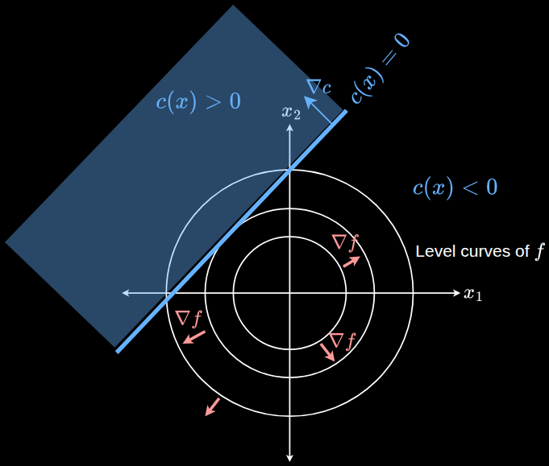

Last modified .

The blue shaded area $c(x) \geq 0$ is the feasible region. This is a linear inequality, since a line marks the constraint-boundary.
The objective function is in 2d, a quadratic bowl. The unconstrained minimum would be at the origin of the bowl. But with the constraints, the new minimum needs to live on the upper left of the plot, in the feasible region.The gradient of $c$ points in the direction of increasing $c$. The gradient of $f$ points radially outward.